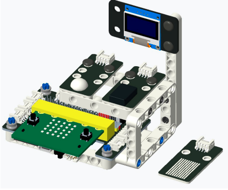

10. Bài 8: Động cơ một chiều
Giới thiệu
Động cơ là một loại thiết bị đóng vai trò cực kỳ quan trọng trong cuộc sống của chúng ta. Bạn có thể thấy động cơ được sử dụng khắp nơi như động cơ xe, quạt điện, …
Có rất nhiều loại động cơ khác nhau. Trong bài này chúng ta tìm hiểu một loại động cơ đơn giản nhất có trên Phys:Bit, đó là động cơ một chiều (DC motor). Loại động cơ này hoạt động rất đơn giản, chỉ cần cấp nguồn theo đúng điện áp định mức vào 2 cực thì động cơ sẽ hoạt động.
Xây dụng mạch điện
Thành phần:
Nguồn điện 3V.
Điện trở R1 100 Ω.
Động cơ M1.
MOSFET.
Nút nhấn.
Sơ đồ mạch điện
{kind=link}
Tương tự như bài trước, ta sẽ dùng MOSFET để bật tắt động cơ vì các chân mở rộng không đủ cấp nguồn cho các thiết bị cần nguồn điện lớn như vậy.
Nguyên lý hoạt động:
Chân P1 được nối với nút nhấn và sẽ đọc trạng thái của nút nhấn để ra lệnh cho P0 bật hay tắt động cơ.
Kết nối mạch điện
DC Motor sẽ quay nếu bạn làm đúng theo hướng dẫn sau:
{kind=link}
Chương trình
Trong chương trình ta sẽ liên tục đọc giá trị của P1.

Nếu P1 bị tắt (nút nhấn đang được nhấn và nối xuống Ground) thì ta sẽ bật chân P0 để bật động cơ.
Và ngược lại, nếu chân P1 đang được bật (tức là nút nhấn được trả về trạng thái tắt ban đầu và P1 không được nối xuống Ground) thì ta sẽ tắt chân P0 để tắt động cơ.
{kind=link}
Kết quả
Kết quả của chương trình:
{kind=link}
Bài tập mở rộng
Thời tiết nóng nực quả thật rất khó chịu, các bạn hãy cùng mình dùng cảm biến nhiệt độ trên Yolo:Bit và động cơ trên Phys:Bit điều khiển quạt quay dựa vào nhiệt độ môi trường. Khi nhiệt độ cao hơn 28 độ thì bật quạt, ngược lại thì tắt quạt.
Chương trình mẫu
Động cơ một chiều : Tại đây
{kind=link}